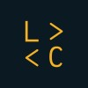

Experiência

- Santander Coders (Web Full-Stack)
- Let's Code
- ago. de 2021 – jun. de 2022
- Remoto

 Início
Início
 Minha Rede
Minha Rede
 Vagas
Vagas
 Mensagens
Mensagens
 Notificações
Notificações
 Eu
Eu
Desenvolvedor Full Stack e Criador de Conteúdo
Fala sobre #tecnologia, #desenvolvedor e #programação
Rio de Janeiro - Brasil